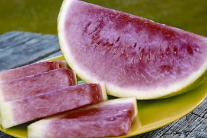

Thinking of growing some sweet, sun-loving melons this year? Early summer is prime planting season for heat-loving watermelons, and you can find world-class melons in many colors (red, yellow or orange) at Texas-based Willhite Seeds. Willhite’s watermelons include old favorites as well as cutting-edge seedless hybrids, the type preferred by most supermarket customers.
Seedless watermelons sometimes are more challenging to grow than seeded ones, because small plantings usually require hand pollination. But if you don’t mind spitting out the occasional seed, anyone can grow red-fleshed, ice-box size ‘Crispy Critter’ or ‘Diablo,’ a 20-pounder that earned top flavor ratings in Texas’ statewide watermelon trials in 2006.
Parker County, Texas, has been famous for its great watermelons for decades - not just in America, but worldwide. Since the 1940s, truckloads of melon seeds have left the Poolville, Texas, loading dock of what is now Willhite Seeds destined for Europe, India and all points in between.
Willhite tries to offer varieties that are especially well suited to home gardens such as the dependable ‘Sugar Queen’ cantaloupe. If you prefer open-pollinated varieties over hybrids, give serious consideration to varieties that have been bred for disease resistance, flavor or color, such as ‘AU-Producer,’ ‘Sugarlee’ and ‘Tastigold.’ Seeds or catalogs can be ordered online, or call 800-828-1840.
|
 ISTOCKPHOTO/JIM JURICA Don’t miss out on delicious watermelon this summer. |
|
|